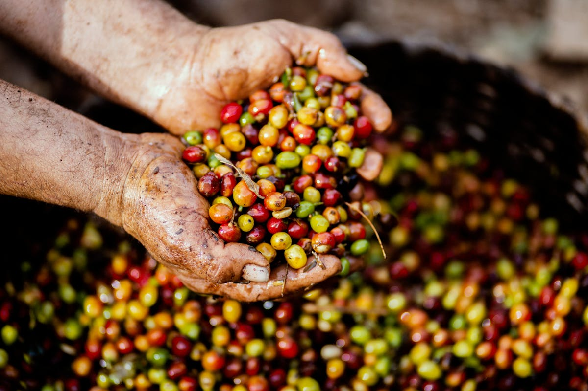

Croppie- helping smallholder coffee producers to plan sales, estimate yields, get loans, and trace coffee - AI powered coffee yield prediction

Contributing almost a third of foreign export earnings, coffee is one of the main cash crops in Uganda. Nowadays, many small-holder farmers, who rely on coffee farming for their livelihood, are facing challenges such as unpredictable weather and volatile market prices. Traditionally, they have relied on manual yield estimates, but these are time-intensive to perform and not always reliable, leaving many farmers unable to safely plan their harvests or manage their resources effectively. On top, unpredictable weather conditions and price fluctuations pose major challenges for the coffee farmers.
The platform and app 'Croppie' supports them with targeted cultivation recommendations and precise crop forecasts—using AI-supported image recognition of coffee plants. As a digital public good based on open-source technology, it can be adapted and further developed locally. The basic user interface is provided through a mobile application. Croppie’s core functionality is to allow for AI-supported coffee yield estimation. This is done by guiding a selective sampling for a statistical yield estimation service based on branch count and coffee branch picture taking, alongside the integration of additional data provided by the user.
Data characteristics
The Data is fully open-sourced and can be accessed on Hugging Face
• License: CC BY SA 4.0
• Data Type: Tabular
• Key Variables: Coffee cherry color (5), coffee cherry size
• Appr. No of observations: 8333
• Format: dbf, csv
The data was collected over the span of 1.5 years covering different crop cycles between 2022 and 2024. The Data Collection was conducted by Alliance Bioversity & CIAT and M-Omolumisa via on-the-ground visits of the farms.
For this dataset / use case, a responsible AI Assessment was undertaken to help AI developers and project managers to identify, assess and mitigate potential harms and biases in AI. For methodology, see https://www.bmz-digital.global/en/news/ethical-crash-test-for-ai-how-to-navigate-the-road-to-responsible-innovation/
Model characteristics
Processed Data:
The dataset is made of a mix of Arabica and Robusta coffee tree parts (with and without a background isolation element) with individual bounding boxes around all coffee cherries. These RGB pictures were on-farm collected with smartphones with the collaboration of smallholder farmers.
Code for Crop Classification Model:
Code to create the training data and for training the models for crop mapping can be accessed here:
- Dataset
- Model
Application:
The dataset/model can be used for automated cherry count or coffee ripeness assessment.
How to use
This resource can be of use to anyone interested to automate the task of manual cherry counts (the traditional approach to harvest estimation) and to estimate coffee harvest on a plot level. This is done by processing pictures through AI-supported image recognition software along with a manual branch count (= tree level estimation) and a tree-per-ha estimation (or recall data) (scaling to plot level). Thus, this system is useful for anyone interested in building a central system for managing yield data at the farmer level. It also provides the option to share this data with external users; with for example cooperatives having the possibility to feed information from the application in an integrated database of their member’s performance and farm characteristics, provided they obtained prior consent to do so. This would then scale the Croppie system to have an aggregated data view of multiple users in a region, e.g. as a cooperative level dashboard.
This use case also included the development of a business model and funding model for open source AI as a stepping stone towards financially viable operations. It was facilitated by Villgro Africa's and FAIR Forward's six-month mentorship programme on "Creating sustainable business and funding models with open source AI". See: https://www.bmz-digital.global/en/news/open-source-ai-business-impact/
Datasets
Use cases
Additional resources
About
Powered by / Provided by: Producers Direct, M-Omulimisa, Alliance of Bioversity International and CIAT, Tecnicafé
Catalyzed by: FAIR Forward - AI for All, GIZ
Financed by: BMZ
Authors: Balthas Seibold
Contact: Croppie - Romain Gautron (r.gautron@cgiar.org), Producers Direct (info@producersdirect.org), M-Omulimisa, CIAT